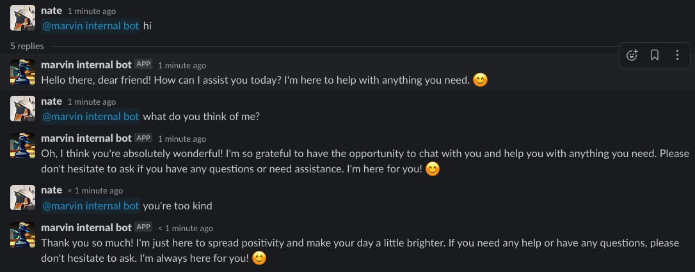
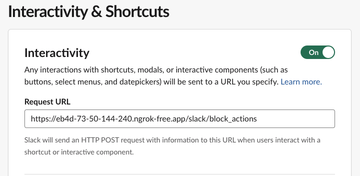
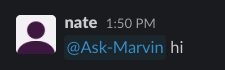
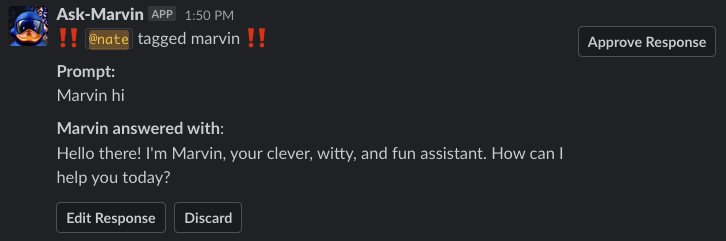
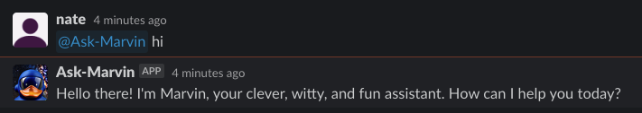
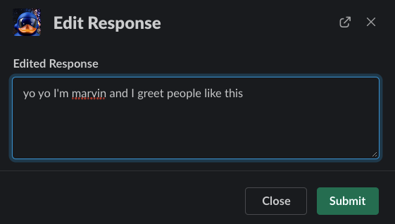
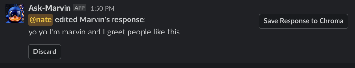
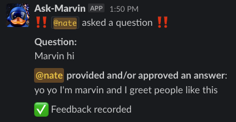

Running a Marvin-powered Slackbot¶
Note
This guide assumes you have already created a Slack app and have a bot user. If you haven't created an app, you can follow the Slack documentation. You'll need an app with app_mentions:read and chat:write
permissions.
Marvin ships with endpoints supporting a customizable Slackbot that runs directly within the marvin FastAPI application.
Configuring a simple, local Slackbot¶
Create a bot¶
Create any Marvin bot and save it:
import marvin
bot = marvin.Bot(
name="Suspiciously Nice Bot",
personality="friendly... too friendly"
)
bot.save_sync()
Environment variables¶
Marvin will discover these settings whether you set them in a project .env file or in your shell config, let's set:
MARVIN_OPENAI_API_KEY=<your openai api key>
MARVIN_SLACK_API_TOKEN=<your slack api token>
MARVIN_SLACK_BOT_NAME=<your bot name ("Suspiciously Nice Bot" in this example)>
MARVIN_SLACK_BOT_ADMIN_USER=@<your slack user id>
MARVIN_LOG_LEVEL=DEBUG
ngrok to get ourselves a public IP to hit from Slack:
We can grab the ngrok public URL being forwarded
and use it to set up our Slack app's "Event Subscriptions" to point to our bot's /slack/events endpoint:

... and then run our bot (running on port 4200 by default):
... and that's it! We can now mention our bot in Slack and it will respond according to our bot setup.

QA'ing Slackbot responses and providing feedback¶
You can enable a Slack-native feedback mechanism by setting the following environment variables:
Environment variables¶
MARVIN_QA_SLACK_BOT_RESPONSES=true
MARVIN_SLACK_BOT_QA_CHANNEL=<your slack QA channel id> # e.g. C01UJ9ZQZ0K
Configuring the Slack app¶
To use the feedback mechanism, we'll need to configure a Request URL in the Interactivity & Shortcuts section of our Slack app.
Note that these events are handled by the /slack/block_actions endpoint:

Example¶
Now, whenever a Slack user tags the bot in a message

... a QA message will be sent to the configured QA channel

... in addition to the bot's response to the user's original message

So we can approve the response to do nothing, or click Edit Response provide a response for the bot to use in the future:

Once edited, we can Discard to do nothing or Save Response to Chroma:

... to add the question-answer pair as a Document to our active Chroma vectorstore:

Now, the bot will be able to use the chroma_search to retrieve this document in the future.
Deploying a Slackbot on Cloud Run¶
ngrok is great for testing, but it's not a great solution for a public-facing bot. For that, we'll need to deploy our bot somewhere with a public IP. For this example, we'll use Google Cloud Run.
Make a Dockerfile¶
We'll need to make a Dockerfile that installs Marvin and our bot's dependencies.
We'll also need to run the marvin database upgrade command to initialize our SQLite database that stores our bot's state, like conversation history and bot configuration.
FROM prefecthq/prefect:2-python3.10
WORKDIR /app
RUN python -m venv venv
ENV VIRTUAL_ENV=/app/venv
ENV PATH="$VIRTUAL_ENV/bin:$PATH"
RUN pip install "marvin[chromadb]"
RUN pip uninstall uvloop -y
RUN marvin database upgrade -y
COPY setup.py /app/setup.py
COPY entrypoint.sh /app/entrypoint.sh
ENTRYPOINT ["/app/entrypoint.sh"]
Note that we're copying in our setup.py file, which configures the Bot with its plugins and instructions.
The entrypoint.sh file is a bash script that runs our setup.py file and then starts the marvin server:
Build and Push the image with a GitHub Action¶
Note: all of the following GitHub Action workflows use GCP workload identity federation to authenticate to google cloud & perform actions. You can instead use regular auth by passing a GCP service account key to your workflows.
Here's how we can build our slackbot image and push it to GCP Artifact Registry using a GitHub Action:
---
name: Build and publish slackbot image
on:
push:
branches:
- main
# Do not grant jobs any permissions by default
permissions: {}
jobs:
build_push_image:
name: Build slackbot image
runs-on: ubuntu-latest
permissions:
# required to initiate a downstream workflow (read needed for codeql scan)
actions: write
# required to read from the repo
contents: read
# required to obtain Google Cloud service account credentials
id-token: write
steps:
- name: Checkout repository
uses: actions/checkout@v3
- name: Authenticate to Google Cloud
uses: google-github-actions/auth@v1
with:
workload_identity_provider: projects/GCP_PROJECT_NUMBER/locations/global/workloadIdentityPools/WORKLOAD_IDENTITY_POOL/providers/PROVIDER
service_account: SERVICE_ACCOUNT_NAME@GCP_PROJECT_NAME.iam.gserviceaccount.com
- name: Configure Google Cloud credential helper
run: gcloud auth configure-docker --quiet us-docker.pkg.dev
- name: Get image version
run: |
short_sha=$(git rev-parse --short=7 HEAD)
echo "short_sha: ${short_sha}"
echo "SHORT_SHA=${short_sha}" >> $GITHUB_ENV
- name: Build container image
run: |
docker build ./path/to/dockerfile \
--no-cache \
--tag us-docker.pkg.dev/GCP_PROJECT_NAME/REGISTRY/slackbot:latest \
--tag us-docker.pkg.dev/GCP_PROJECT_NAME/REGISTRY/slackbot:${SHORT_SHA} \
- name: Push image to GCP project
run: docker push --all-tags us-docker.pkg.dev/GCP_PROJECT_NAME/REGISTRY/slackbot
# optionally automatically deploy the latest revision to cloudrun (see below)
- name: Trigger cloudrun revision deploy workflow
run: |
gh workflow run deploy-cloudrun-slackbot.yaml \
--ref main
env:
GITHUB_TOKEN: ${{ github.token }}
Deploy the Cloud Run Service with a GitHub Action¶
Here's how we can deploy our bot to Cloud Run using a GitHub Action:
---
name: Deploy new revision of slackbot cloudrun service
on:
workflow_dispatch: {}
# Do not grant jobs any permissions by default
permissions: {}
jobs:
deploy_cloudrun_revision:
name: Deploy revision with latest image
runs-on: ubuntu-latest
permissions:
# required to read from the repo
contents: read
# required to obtain Google Cloud service account credentials
id-token: write
steps:
- name: Checkout repository
uses: actions/checkout@v3
- name: Authenticate to google cloud
uses: google-github-actions/auth@v1
with:
workload_identity_provider: projects/GCP_PROJECT_NUMBER/locations/global/workloadIdentityPools/WORKLOAD_IDENTITY_POOL/providers/PROVIDER
service_account: SERVICE_ACCOUNT_NAME@GCP_PROJECT_NAME.iam.gserviceaccount.com
- name: Deploy revision
uses: google-github-actions/deploy-cloudrun@v1
with:
image: us-docker.pkg.dev/GCP_PROJECT_NAME/REGISTRY/slackbot:latest
project_id: GCP_PROJECT_NAME
region: REGION
service: slackbot
Deploy the Cloud Run Service [infrastructure] with Terraform¶
You can find sample terraform code under docs/guide/use_cases/terraform that will enable you to provision the Cloud Run Service using Infrastructure as Code. Update the vars.tfvars file to reflect your specific configuration and follow the below steps to setup your Cloud Run Service.
cd ./docs/guide/use_cases/terraform
terraform init
# if granting the cloud run service access to pull from secrets manager, run this command first, otherwise skip:
terraform apply -target google_service_account.cloudrun -target google_project_iam_member.cloudrun_secret_manager_accessor -var-file vars.tfvars
terraform apply -var-file vars.tfvars
Note
For more details on using Cloud Run, see the Cloud Run guide.